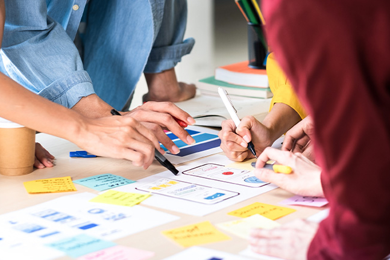

Macquarie University
Optimising the student experience through journey mapping & service touchpoint analysis
Services
Service Strategy & Design
Industry
Education
Role
Lead Service Designer
Duration
May 2022 - Sept 2022
Challenge
New students at Macquarie often feel overwhelmed by inconsistent information across communication channels. This confusion leads to uncertainty during the enrolment and onboarding process.

Discovery
In order to understand the pain points of new students during the enrolment and onboarding process, we ran co-design workshops with internal staff across university departments to identify key moments in the student journey and map current service touchpoints like emails and the website.
As a result, we discovered that siloed communication between teams led to confusion and duplication in the content students received.

Competitor Workshop
Prior to mapping the student ouboarding service blueprint, I facilitated a workshop using dot-voting to evaluate student service journeys from 5 local universities. Staff voted on effective practices and pain points from others to inspire improvements.

Solution: Streamlined Journey Map
We designed a blueprint outlining key steps and service touchpoints from offer to onboarding. This included suggestions for integrated messaging across the student portal, email, and service centres.

Outcome
This project improved communication across student service departments, helping to break down silos and prevent confusion or duplicated content in the information provided to students.
It also laid the foundation for the Macquarie University Onboarding Experience project that focused on improving key student touchpoints, reducing confusion, and fostering a smoother university onboarding journey.
Reflection
This project reminded me of the importance of putting myself in the shoes of students — to look at their challenges as if they were my own. By practicing empathy and considering their emotional state during onboarding, I was able to identify gaps and design solutions that were not just functional, but truly supportive.
It also reinforced the value of bringing all stakeholders onto the same page. Facilitating co-design workshops using service design and UX methods helped break down silos and build shared understanding across departments — a vital step toward long-lasting change.